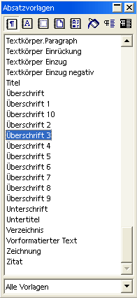
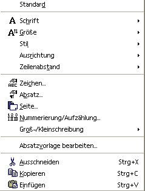
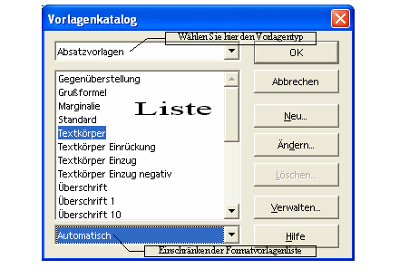
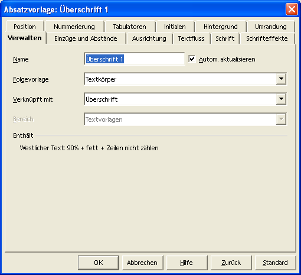

|
Herausgegeben durch das
Inhaltsverzeichnis
Beispielkapitel: 14 Formatvorlagen Formatvorlagen bieten eine sehr einfache Möglichkeit die Gestaltung eines Dokuments zu vereinfachen. Formatvorlagen werden gemäß bereits zuvor erwähnter Verarbeitung ebenfalls in Zeichen und Absatz unterschieden. Dementsprechend gibt es Formatvorlagen, die zeichenbasiert und andere, die absatzbasiert sind. Beispiele für absatzbasierte Formatvorlagen sind Überschriften. Das heißt, sobald ein RETURN eingegeben wird, wird ein neuer Absatz erzeugt und damit gilt die Überschrift nur für den Absatz. Eine zeichenbasierte Formatvorlage wird beispielsweise für diesen Text verwendet. 14.1 Formatvorlagen verwendenVorhandene Formatvorlagen werden einfach zugewiesen. Für absatzbasierte Vorlagen platzieren Sie den Cursor in den zu formatierenden Absatz, um anschließend die Formatvorlage zu wählen. 14.1.1 Die Symbolleiste ObjektleisteHier werden die vorhanden Formatvorlagen angezeigt und können ausgewählt werden. 14.1.2 Der StylistIm Gegensatz zu anderen Textverarbeitungen (:-) werden auch andere Formatvorlagen verwaltet. Neben Zeichen- und Absatzformaten werden in OpenOffice.org auch Rahmen-, Seiten- und Nummerierungsvorlagen angeboten. Falls der Stylist nicht angezeigt wird (als freischwebende Symbolleiste), kann er über Format --> Stylist aufgerufen werden. 14.1.3 Formatvorlagen bearbeitenRufen Sie die Bearbeitung über das Kontextmenü auf.
 Je nach Position des Cursors bei der Aktivierung des Kontextmenüs kann der Befehl nicht vorhanden sein. Achten Sie daher darauf, dass der Cursor in einem Absatz platziert ist, bevor Sie das Kontextmenü (Klick mit rechter Maustaste) aufrufen. Eine weitere Möglichkeit, die Bearbeitung der Formatvorlagen aufzurufen, ist Format --> Vorlagen --> Katalog... In dem dann erscheinenden Dialog wählen Sie Ändern... Natürlich haben Sie hier zusätzlich die Gelegenheit, eine bestimmte Formatvorlage zur weiteren Bearbeitung auszuwählen. Vorgegeben ist aber die aktuelle Formatvorlage. Sie können auf diesem Wege auch neue Formatvorlagen erstellen. Wählen Sie dazu die Schaltfläche Neu... Abbildung 52 Format-Vorlagen-Katalog Egal welchen Weg Sie wählen, gelangen Sie anschließend in den unten dargestellten Dialog. Viele der Register sind bereits bekannt von der Formatierung eines Textes oder Absatzes (siehe oben). Daher werden hier nur die zusätzlichen Register vorgestellt. Beachten Sie aber, dass Sie hier allerdings eine Formatvorlage ändern. Diese Änderung hat eine weiterreichende Auswirkung. Die Änderung wirkt sich in diesem Fall nämlich auf alle Teile Ihres Dokuments aus, die mit dieser Formatvorlage erstellt wurden. Abbildung 53 Formatvorlagen verwalten Wenn Sie beispielsweise die Formatvorlage Überschrift1 ändern, werden alle Überschriften im gesamten Dokument verändert, die mit der Formatvorlage Überschrift1 formatiert wurden. Download des gesamten Dokuments:
|